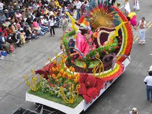
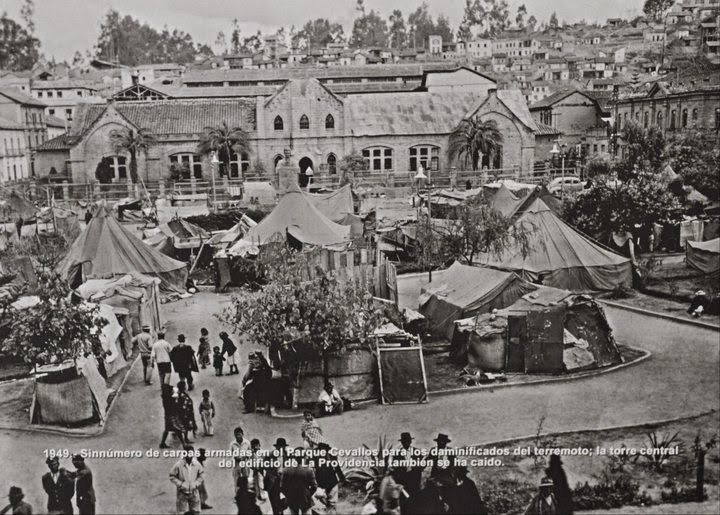

La principal celebración que posee el cantón es la “Fiesta de la Fruta y de las Flores”, que se lleva a cabo
cada año 40 días antes de Semana Santa. Es denominada como una de las más hermosas celebraciones alrededor del país, siendo considerada como Patrimonio Cultural Intangible de la nación.

Luego del terremoto ocurrido el 5 de agosto de 1949, en la ciudad de Ambato, que arrasa con gran parte de la ciudad y de sus habitantes,
el pueblo buscó reactivarse y dejar de lado este suceso, por lo que los socios del Centro Agrícola Cantonal fueron el eje principal de la organización de la primera fiesta que se llevó a cabo el 17 de febrero de 1951.

Actualmente la Fiesta es una manifestación de cultura y diversión que congrega año tras año a miles de turistas, pues se puede disfrutar de
variadas actividades como el Festival Internacional de Folclore, Desfile de la Confraternidad, Bendición de las Flores, Frutas y Pan, eventos en los que prima diversas decoraciones con frutas, flores, pan y semillas.
Durante los últimos días de Octubre y los primeros días de Noviembre, hay muchos países en Latinoamérica y Europa, que celebran algún feriado
relacionado con la muerte, y/o la vida después de la muerte. En Ecuador, celebramos el Día de los Difuntos, es un feriado en el que se honra la vida de los seres queridos que han partido de este mundo.
El Día de los Difuntos, también llamado el Dia de los Finados, coincide con la celebración católica de Todos los Santos – al igual que otras festividades parece que esta celebración es el resultado de combinar una antigua
tradición o rito indígena con una fiesta católica. Las celebraciones del Día de los Difuntos consisten de vigilias y visitas a los cementerios donde se llevan ofrendas de flores y comida tradicional a los difuntos.
Es uno de los eventos más importantes que se lleva a cabo durante las fiestas. Miles de jóvenes de diferentes planteles educacionales participan
con sus bandas de guerra y sus comparsas. Las veredas y balcones de las casas lucen repletos de personas llegadas de diversos sectores de Tungurahua. Todos con el propósito de observar el paso de las bandas musicales,
bastoneras, cachiporreros, abanderados, estudiantes y autoridades de los colegios del cantón que saludaron a la ciudad en su conmemoración independentista. Las bandas que se pueden observar cautivando al turista con sus melodías,
en los días de desfiles se hacen presente Instituciones como el Conservatorio de Música, con sus verdaderos temas.
Llapingachos.
Pan de Pinllo.
Helados de Ficoa.
Colada Morada y Empanadas de Viento.
Gallinas de Pinllo.
Cuyes de Ficoa.
Empanadas de Morocho.
Jugos y Batidos.